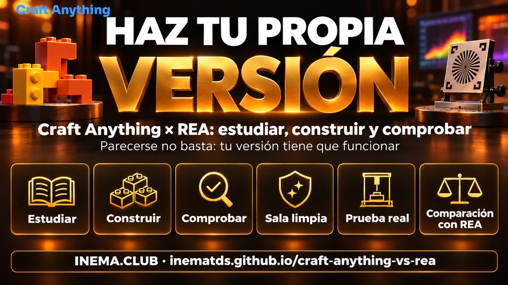

Crea tu versión de una app. Después demuestra que funciona.
Craft Anything estudia el original, le pide a un agente de IA que construya tu versión y comprueba si se parece. Aquí aprenderás a usarlo, verás la prueba que hicimos y te llevarás una guía para comprobar el resultado con cualquier agente.
Craft Anything es un programa abierto y gratuito que observa un sitio web, una app o un juego, le pide a un agente de IA (como Claude Code) que escriba su propia versión desde cero y compara el resultado con el original. Esta guía enseña a instalarlo y usarlo con seguridad, lo compara con REA, otra herramienta abierta que muestra cómo funciona un programa por dentro, y presenta una prueba real que hicimos aquí. El kit incluye una guía para medir la similitud y una lista de funciones para comprobar la copia con cualquier agente. Necesitas una computadora y un agente de código con sesión iniciada; el kit requiere Node.js y Python 3.
Qué es
Estudiar, construir y comprobar en un solo lugar
La idea es antigua: en 2009, Markus Persson vio el juego Infiniminer e hizo su propia versión en aproximadamente una semana, sin el código del original. Se convirtió en Minecraft, y Microsoft compró Mojang por US$ 2,5 mil millones en 2014. Hoy un agente de IA hace el trabajo pesado; Craft Anything organiza ese trabajo.

🔍 Estudia el original
Toma capturas de pantalla, mide colores, fuentes y espacios, y lee el texto visible en tres tamaños de pantalla: computadora portátil, tableta y celular.
🛠️ Un agente construye
Ejecuta tu agente de código (Claude Code es el primero compatible) y le pide una versión nueva, escrita desde cero, con tu nombre y tus colores.
✅ Comprueba y mejora
Compara tu versión con el original, enumera lo que todavía no coincide y se lo devuelve al agente, ronda tras ronda, hasta que se parezca.
Fuente: github.com/storytold/craft-anything — código abierto (MIT o Apache-2.0), creado por el equipo de ArtCraft, versión 0.6.0 del 09/11/2026, todavía en «early alpha».
Cómo funciona
Las 4 etapas
Indicas el original, dices lo que quieres y presionas Start. Cuando tiene que tomar una decisión, te pregunta con palabras simples.
Abre el original en un navegador privado y registra lo que ve un visitante, a 1440, 768 y 390 px.
2
Construir
El agente escribe un proyecto nuevo en el lenguaje que le pidas (o en el que considere mejor).
3
Comprobar
Compara las pantallas una al lado de la otra y enumera las diferencias. Se detiene cuando llega a «Good enough» (90% por defecto).
4
Listo
Abres el resultado o pides cambios en el cuadro de abajo, y vuelve a mejorarlo.
Sala limpia × Deep
🧼 Sala limpia (predeterminada)
Solo usa lo que ve un visitante: capturas, texto visible, medidas, colores, fuentes y menús abiertos. No lee código, archivos ni el código fuente de la página. Rechaza las herramientas que permiten mirar por dentro. Úsala siempre que el original no sea tuyo.
🔬 Deep
Usa todas las herramientas: lee el código y los archivos del programa (con Ghidra, si está instalado) y el JavaScript del sitio. Úsalo solo con lo que te pertenece o que tienes permiso para examinar.
⚠️ La sala limpia no es un entorno aislado
Es una regla sobre lo que Craft Anything ofrece y rechaza. El agente que ejecutas sigue actuando como tú, con tus permisos. En nuestra prueba, el agente constructor de Claude Code incluso leyó la configuración personal de la computadora. Para aislarlo de verdad, ejecútalo en una computadora o carpeta separada, sin contraseñas ni claves (consulta caixa-do-agente).
Palabras que aparecen aquí
Agente de código
Una IA que escribe y ejecuta programas en tu computadora, como Claude Code. Harness es el programa que le da herramientas al modelo de IA para actuar (leer, escribir y ejecutar comandos).
CLI, MCP y ACP
CLI = usar la terminal escribiendo comandos. MCP y ACP son «conectores» estándar para conectar un agente de IA con herramientas (MCP) o con otro programa que lo controla (ACP).
Ingeniería inversa
Descubrir cómo funciona un programa observando lo que hace o el archivo ya creado, sin el código fuente. Ghidra, Hopper, IDA y Kuna son programas que «traducen» un archivo ejecutable a algo legible.
Sandbox
Un espacio aislado donde se ejecuta un programa sin que pueda modificar el resto de la computadora. Chromium usa uno; ninguna de las dos herramientas de aquí lo usa.
SHA256
Un «código de verificación» del archivo. Si el código de tu descarga coincide con el publicado, el archivo llegó completo y no fue reemplazado.
Early alpha
Versión muy inicial: funciona, pero cambia rápido y todavía tiene defectos. AppImage, .deb, .rpm, snap y Flatpak son formatos para instalar programas en Linux.
Requisitos previos
Qué necesitas
Para Craft Anything y para el kit de comprobación de este repositorio.
💻 Una computadora
Windows, macOS, Linux (Intel/AMD o ARM) o FreeBSD. Con Chrome, Edge, Brave o Chromium instalado: necesita abrir un navegador para estudiar sitios web.
🤖 Un agente de código con sesión iniciada
Claude Code (el primero compatible), o Copilot CLI y Grok mediante el protocolo ACP. Usa tu inicio de sesión; Craft Anything nunca ve tu cuenta.
🧰 Para el kit
Node.js 18 o posterior con Playwright (para medir la similitud) y Python 3 (para la lista de funciones). No necesitas Craft Anything.
Guía de uso · paso a paso
Instalar y configurar con seguridad
Seis pasos. El cuarto es el más importante: desactivar el modo automático para que pida permiso antes de ejecutar comandos.
1
Descarga desde la página oficial y verifica el archivo
En la página de versiones del repositorio, descarga el archivo de tu sistema: .msi (Windows), .dmg (macOS) o, en Linux, el paquete comprimido .tar.gz (el que probamos), el .AppImage (un solo archivo que se ejecuta directamente), el .deb (Ubuntu/Debian) o el .rpm (Fedora). Compara el «código de verificación» SHA256 con el archivo SHA256SUMS.txt de la misma página: si coincide, el archivo llegó completo y es el publicado. Así lo hicimos en nuestra prueba:
# Linux ARM64; en Intel/AMD cambia aarch64 por x86_64gh release download v0.6.0 -R storytold/craft-anything -p 'craft-anything-0.6.0-linux-aarch64.tar.gz' -p 'SHA256SUMS.txt'grep linux-aarch64.tar.gz SHA256SUMS.txt; sha256sum craft-anything-0.6.0-linux-aarch64.tar.gz
# los dos códigos deben coincidir; después:tar -xzf craft-anything-0.6.0-linux-aarch64.tar.gz
./craft-anything-0.6.0-linux-aarch64/bin/craft-anything # la app de ventana
./craft-anything-0.6.0-linux-aarch64/bin/craft-anything-cli doctor # la línea de comandos
¿No tienes gh? Descárgalo con el navegador desde github.com/storytold/craft-anything/releases. ¿Quieres ir más allá de SHA256? La página también tiene SHA256SUMS.txt.asc y la clave release-signing-key.asc para comprobar la firma con gpg (en nuestra prueba: «Good signature»). Su README avisa que Flatpak no puede abrir el navegador, algo necesario para estudiar sitios web: prefiere otro formato.
2
Instala Claude Code e inicia sesión
Si todavía no lo tienes, instálalo e inicia sesión con tu cuenta (suscripción). Craft Anything ejecuta tu claude tal como está configurado.
# macOS y Linuxcurl -fsSL https://claude.ai/install.sh | bash
claude# la primera vez, sigue las instrucciones para iniciar sesión en el navegadorclaude auth status # comprueba si iniciaste sesión# Windows (PowerShell): irm https://claude.ai/install.ps1 | iex
3
Conecta el agente en Craft Anything
En la app: Settings → AI → Harnesses → Detect. Encuentra Claude Code instalado. En la línea de comandos, craft-anything-cli doctor muestra lo que falta.
4
Desactiva el modo automático
Settings → Safety → Auto mode → desactivado. Viene activado de fábrica: el agente constructor ejecuta comandos (como npm install) sin preguntar. Al desactivarlo, según su documentación, aparece una tarjeta «Allow once / Always for this project / Don't allow» antes de cada nuevo tipo de acción (en nuestra prueba estaba activado y no preguntó nada). Instalar paquetes ejecuta código en tu computadora; elige «siempre» solo para lo que confías.
5
Elige la carpeta para los proyectos
Settings → General. La ubicación predeterminada es Documentos/Craft Anything. Cada proyecto tiene una carpeta con craft.json (la solicitud y el historial), capture/ (lo que vio del original), app/ (tu versión) y checks/ (cada comparación).
6
Haz tu primera solicitud
En la pantalla Make: elige Website, App o Game, pega la dirección, deja Clean room, escribe lo que quieres y presiona Start. O usa la línea de comandos (craft-anything-cli, incluido en el archivo .tar.gz; su README dice que el AppImage también lo incluye, con --cli):
craft-anything-cli rebuild https://example.com "Recreate this website" --clean-room
craft-anything-cli rebuild https://example.com "Make the header blue" --continue-in "<carpeta del proyecto>"
La prueba de la pizarra
Una copia bonita que no dibuja no sirve
Una buena prueba para cualquier herramienta de este tipo es una pizarra de dibujo abierta, como Excalidraw: tiene un aspecto sencillo y muchas funciones fáciles de comprobar. En Settings, sube «Good enough» a 95% y pide:
Make my own version of this whiteboard app and call it <NOME>. Keep the same drawing tools and
layout, but use my own name and colors.
También puedes pedirlo en español: «Crea mi propia versión de esta app de pizarra y llámala <NOME>. Mantén las mismas herramientas de dibujo y el mismo diseño, pero usa mi nombre y mis colores». Usa una instancia que puedas probar; nunca un sitio que requiera iniciar sesión.
Cuando esté lista, prueba las 16 funciones
Rectángulo
Círculo / elipse
Rombo
Línea
Flecha
Lápiz (dibujo libre)
Texto
Color del trazo y del fondo
Seleccionar y mover
Cambiar el tamaño
Borrar
Deshacer / rehacer
Zoom
Tema claro / oscuro
Exportar imagen
Nombre y marca propios
El kit genera esta lista con instrucciones para probar cada función y la rechaza mientras falten pruebas: python3 conferir/funcoes.py gerar quadro-branco --nome "<NOME>" --saida checklist.md.
Cambia la marca solo después
Cuando todo funcione, pide en el cuadro de cambios: un logo nuevo, el color morado y el nombre en todas partes. Primero que funcione, después la apariencia: mezclar ambas cosas confunde al agente. La solicitud lista está en pedidos/3-mudanca-de-marca.md. Lo que importa es la experiencia de uso, no la captura de pantalla.
Comparación
Craft Anything × REA
Datos comprobados el 10/11/2026 en el README de cada repositorio y en la API de GitHub. Detalles y fuentes en COMPARACAO.md (en portugués).
Craft Anything
REA (Reverse Engineer Anything)
Qué hace
Estudia, pide que construyan y comprueba, todo en una app
Le da herramientas a tu agente para estudiar programas; el agente explica con pruebas y puede escribir tu versión
Quién construye
Un agente que ejecuta (primero Claude Code)
El agente que ya usas (Claude Code, Codex, Cursor, Gemini CLI…)
Cómo comprueba
Por sí solo: pantallas en 3 tamaños, hasta llegar a «Good enough»
No incluye una comprobación visual lista; el agente prueba lo que hizo
Sala limpia
Viene activada de fábrica
No tiene un modo con ese nombre
Mirar por dentro
Modo Deep (motores propios + Ghidra)
Es su punto fuerte: Hopper, Ghidra, IDA o Kuna; .NET, Android, Electron, firmware…
Formato
App de ventana + CLI + MCP
MCP + CLI (Node.js)
Licencia
MIT o Apache-2.0
MIT
Creado
31/10/2026 · ~26 mil estrellas
14/04/2026 · ~450 mil estrellas
Madurez
0.6.0, «early alpha»
rea-agents 6.8.0
¿Es un entorno aislado?
No (su propio README lo advierte)
No: se ejecuta con tus permisos
«¿Craft Anything es el padre de REA?» No.
REA nació seis meses y medio antes, es de otro propietario, está escrito en otro lenguaje y ninguno de los dos README menciona al otro. Además, REA no «solo muestra cómo funciona»: su README dice que el agente puede construir una versión para tu proyecto. La diferencia real está en el conjunto de herramientas: Craft Anything lo reúne todo en una app con la sala limpia activada; REA es una caja de herramientas más completa para estudiar, y la construcción queda a cargo de tu agente.
Usa Craft Anything cuando…
quieras rehacer un sitio, una app sencilla o un juego a tu manera, sin leer el código de nadie, y quieras una comprobación lista.
Usa REA cuando…
quieras entender cómo funciona por dentro una función de uno de tus programas: un algoritmo, un formato de archivo o una app instalada.
Usa el kit de este repositorio cuando…
ya tengas un agente y quieras comprobar cualquier copia: similitud en 3 tamaños y pruebas de cada función.
Prueba real · 10/11/2026
Qué pasó cuando lo ejecutamos aquí
Computadora Linux ARM64, Claude Code con suscripción, ninguna clave de API. Original: una página local para contar vasos de agua («Copo Cheio»). Solicitud: la misma página con el nombre «Gota Certa» y color verde, en sala limpia.
8 de 8funciones probadas con un script funcionaron
Las dos calificaciones no se contradicen: la de Craft Anything combina diseño, detalles y texto; nuestra medición solo observa dónde está cada elemento, y los cambios de nombre y pie de página pesan más. Por eso usamos la meta 85.
Original (izquierda) y versión creada por Craft Anything con Claude Code (derecha), a 1440 px.Mapa de diferencias a 390 px: rojo = diferente. El nombre y el pie de página nuevos bajan la calificación.
Qué funcionó y qué lo impidió
funcionó
Descarga verificada: SHA256 y firma GPG coinciden.
doctor: todo bien; encontró Claude Code, Codex y Chromium.
commands: 322 comandos (el README indica 320).
Reconstrucción en sala limpia lista y funcionando: sumar, restar, reiniciar, barra y celular.
Costo: se cobró a la suscripción («api_billed_usd»: 0).
lo impidió
Chromium de snap no abrió; el de Playwright fue bloqueado por el sandbox de Ubuntu. Funcionó con un solo atajo para la página local.
El modo automático viene activado: ejecutó npm install sin preguntar.
El agente agregó cosas que no pedimos (guardar en el navegador, una frase en el pie de página) y lo avisó.
En el primer intento creó una configuración fuera de la carpeta de prueba.
Resultados, comandos y detalles: TESTE-AQUI.md (en portugués).
El kit
La etapa «Comprobar» para cualquier agente
Dos herramientas que no dependen de Craft Anything ni de REA: una mide si el resultado se parece, la otra exige pruebas de que funciona. Además, incluye cinco solicitudes listas para pegar en el agente.
1
Descarga el kit
git clone https://github.com/inematds/craft-anything-vs-rea
cd craft-anything-vs-rea
npm install -g playwright && npx playwright install chromium # solo una vez
2
Mide la similitud en los 3 tamaños
Indica el original y tu versión (una dirección o un archivo .html). Obtendrás una tabla con estructura (dónde está cada elemento, ignora el color), color (si coinciden las paletas; solo es informativo) y píxeles iguales, además de capturas lado a lado y un mapa de diferencias. Usa 1440, 820 y 390 px (Craft Anything usa 768 en tablet); cambia los tamaños con --larguras.
node conferir/semelhanca.js https://original.exemplo minha-versao/index.html --meta 85 --saida conferencia
# salida 0 = pasó en los 3 tamaños · 1 = algún resultado está por debajo de la meta · 2 = error (la página no abrió, 404…)
La medición no se deja engañar por un fondo oscuro: dos páginas oscuras diferentes pueden tener más del 90% de píxeles iguales, pero su estructura puede quedar por debajo del 50%.
3
Exige pruebas de cada función
python3 conferir/funcoes.py modelos # cuadro-branco, genericopython3 conferir/funcoes.py gerar quadro-branco --nome "Rabisco" --saida checklist.md
# el agente prueba, marca [x] y escribe la prueba en cada línea; después:python3 conferir/funcoes.py conferir checklist.md # 0 = todas probadas · 1 = falta alguna
El modelo quadro-branco incluye las 16 funciones de una app de dibujo. Para otro tipo de app, usa generico (10 funciones comunes: menú, acción principal, formulario, celular, teclado…) y cambia las líneas por las de tu app: python3 conferir/funcoes.py gerar generico --nome "MeuApp" --saida checklist.md.
¿Quieres una prueba automática de funciones? conferir/exemplos/funcoes-contador.js es lo que usamos en la prueba real; cópialo y cambia los pasos para tu app.
4
Usa las solicitudes listas
Abre la solicitud, reemplaza lo que está entre < > y pégala en el chat del agente (o en el cuadro de solicitud de Craft Anything).
bash tests/rodar.sh: más de 30 verificaciones, sin internet.
Sin nube
La opción local
Craft Anything usa modelos locales solo para preguntas y análisis; para construir, necesita un agente de código instalado. Si quieres que todo se ejecute en tu computadora, sin depender de modelos en la nube, la opción que ya probamos es REA con un harness local y un modelo abierto en Ollama.
🔓 rea-sem-travas
Harness dsh + modelo abierto en Ollama + REA, todo local. Abrir la guía
🧾 rea-com-provas
El agente debe demostrar lo que dice haber entendido; verificador en Python. Abrir la guía
🧭 rea-engenharia-reversa
La guía de REA con una prueba hecha desde cero. Abrir la guía
📦 caixa-do-agente
Ejecuta cualquier agente en un entorno Docker desechable, sin red ni tus archivos .env. Abrir la guía
🎨 site-inspirado
Un sitio con el estilo de tus referencias y una revisión para comprobar la página. Abrir la guía
📈 site-que-vende
Mide los 5 patrones de un sitio que atrae clientes y te dice qué corregir. Abrir la guía
Uso responsable
Estudia solo lo que te pertenece o aquello que tienes permiso para examinar. Craft Anything no elude DRM, inicio de sesión ni sistemas antitrampas.
Tu versión se escribe desde cero: no uses logos, fotos ni textos del original sin permiso.
Ejecuta el programa en una carpeta separada, sin contraseñas, claves ni datos de clientes.